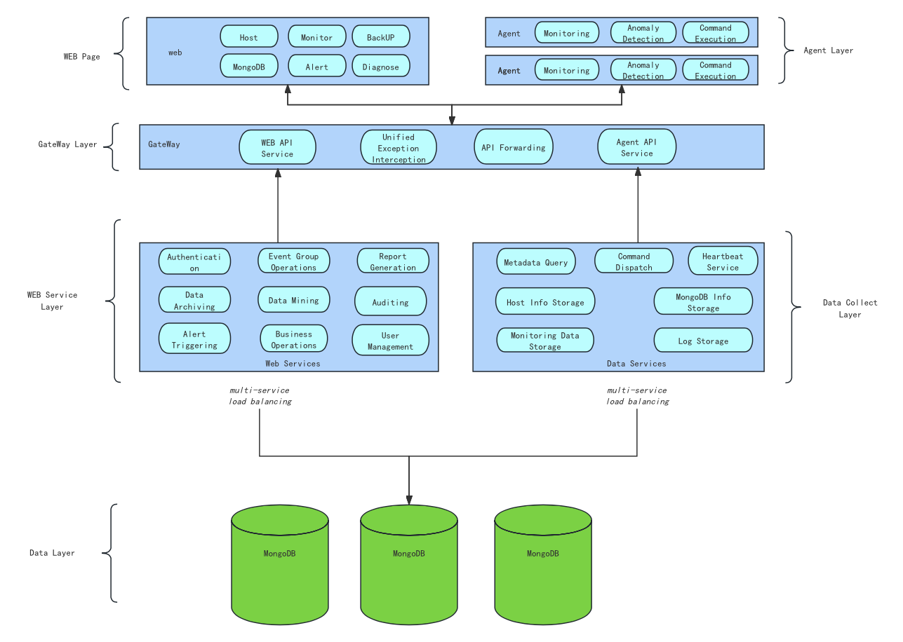

WAP 4.0 Architecture Overview
1. Architectural Objectives
The WAP 4.0 architecture is designed around the following core objectives:
- Unified lifecycle management for MongoDB clusters
- Automated orchestration and delivery of AWS cloud resources
- High-availability, scalable platform service architecture
- Support for automated backup, restore, and elastic scaling
- Minimization of user operational complexity

2. System Overall Architecture
WAP 4.0 is composed of five layers: Control Layer, Service Layer, Orchestration Layer, Execution Layer, and Resource Layer:
┌────────────────────────────────────────────┐
│ Control Layer (UI) │
│ Web Console / User Entry / Permissions & │
│ Project Management │
└────────────────────────────────────────────┘
│
▼
┌────────────────────────────────────────────┐
│ Platform Service Layer │
│ Backend Service Cluster / API Services / │
│ Business Logic Processing │
│ User Management / Policy Management / │
│ Task Management │
└────────────────────────────────────────────┘
│
▼
┌────────────────────────────────────────────┐
│ Automated Orchestration & │
│ Scheduling Layer │
│ • AWS Resource Orchestration (EC2 / VPC / │
│ Subnets / Security Groups) │
│ • MongoDB Cluster Automated Deployment │
│ • Backup / Restore Workflow Orchestration │
│ • Elastic Scaling Policy Execution │
└────────────────────────────────────────────┘
│
▼
┌────────────────────────────────────────────┐
│ Execution & Collection Layer │
│ Whaleal Agent / Command Execution / │
│ Metrics Collection │
│ Log Collection / Status Reporting │
└────────────────────────────────────────────┘
│
▼
┌────────────────────────────────────────────┐
│ Resource Layer │
│ AWS Cloud Resources (EC2/EBS/VPC, etc.) │
│ MongoDB Clusters (Replica Sets / Sharded │
│ Clusters) │
│ Backup Nodes / Restore Nodes / Storage │
└────────────────────────────────────────────┘
3. Core Components Description
3.1 Web Console (Control Layer)
- Provides a unified, visual interface
- Supports cluster creation, policy configuration, and status monitoring
- Abstracts underlying complex parameters, focusing on business objectives
3.2 Platform Service Layer
- Hosts the platform's core business logic
- Provides unified API interfaces
- Manages users, permissions, projects, policies, and tasks
- Coordinates interactions between various modules
3.3 Automated Orchestration & Scheduling Engine (Core Capability)
This module is the core capability of WAP 4.0, responsible for:
- Calling AWS APIs to automatically create cloud resources (EC2, VPC, Subnets, Security Groups, etc.)
- Automatically deploying MongoDB replica sets and sharded clusters
- Executing backup and restore workflows automatically
- Triggering scaling or instance upgrades based on thresholds and policies
- Managing resource lifecycles to avoid resource waste
3.4 Whaleal Agent (Execution & Collection Layer)
- Deployed on managed MongoDB nodes
- Executes operational commands from the platform
- Collects system and MongoDB metrics
- Reports task results and runtime status
3.5 Resource Layer (Managed Objects)
Resources ultimately managed and orchestrated by the platform include:
- AWS cloud infrastructure (EC2, EBS, VPC, subnets, etc.)
- MongoDB clusters (replica sets / sharded clusters)
- Backup and restore nodes
- Storage resources (e.g., object storage)
4. Typical Workflow Description
Automated MongoDB Cluster Creation Workflow
- The user initiates a "Create Cluster" operation via the console
- The platform generates a deployment plan
- The orchestration engine calls AWS APIs to provision infrastructure
- MongoDB is automatically deployed and initialized
- Agents are deployed and nodes are onboarded
- The cluster becomes fully monitorable and manageable
Automated Backup & Restore Workflow
- Users configure backup policies
- The platform automatically prepares the execution environment and performs backups
- During restore, recovery nodes and network configurations are automatically created
- The restored cluster is delivered fully operational
Automated Scaling Workflow
- The platform continuously monitors capacity and load metrics
- Upon reaching thresholds, an evaluation is triggered
- Instances are automatically upgraded or storage expanded according to policies
- Entire workflow requires no manual intervention
5. Summary of Architectural Features
- MongoDB-specific management platform architecture
- Deep integration with AWS for infrastructure and database automation
- Clear separation of layers, ensuring scalability and maintainability
- Process-driven, automated operational capabilities, significantly reducing manual complexity